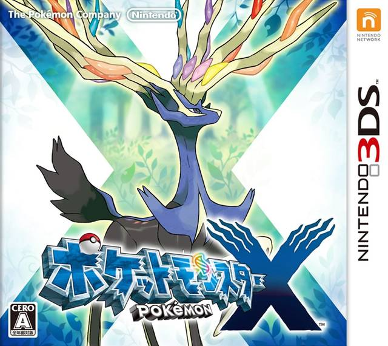

Pokemon X
Information
Game n°4
We're going to meet a new Professor, introducing us to the world of Pokemon.
Again.
The previous lesson was a lot of new grammar, so I figured this one should a be a little lighter.
Take note that the first sentence doesn't have an enlglish translation. That's normal. We have to choose between kana and kanji.
So the lines are only in japanese version.
Vocabulary
- ゲーム - 【ゲーム】★★★★
game - つかう - つかう 【使う】★★★★★
to use (a thing, method, etc.), to make use of, to put to use - もじ - もじ【文字】 ★★★★★
letter (of alphabet), character - ひらがな - ひらがな 【平仮名】★★★
hiragana, cursive Japanese syllabary used primarily for native Japanese words (esp. function words, inflections, etc.) - カタカナ - 【カタカナ】
katakana, angular Japanese syllabary used primarily for loanwords - 漢字 - かんじ 【漢字】★★★★
Chinese characters, kanji - 使う - つかう 【使う】★★★★★
to use (a thing, method, etc.), to make use of, to put to use - 地方 - ちほう 【地方】★★★★★
district, region, area, locality - 博士 - はかせ 【博士】★★★★
doctorate, PhD, Dr (as a title) - ちぢめる - ちぢめる 【縮める】★★★
to shorten, to reduce, to condense, to shrink - 生き物 - いきもの 【生き物】★★★★
living thing, animal - あちこち - あちこち 【彼方此方】
here and there, all around, everywhere, throughout, all over - さて - さて 【扠】★★★★★
well, now, then - 雰囲気 - ふんいき 【雰囲気】★★★★★
mood, ambience, ambiance, aura, feel - ほう - 【ほう】★
oh, ho, exclamation of surprise, admiration, etc. - なるほど - なるほど 【成程】
I see, That's right!, Indeed - あなた - あなた 【貴方】★★★★★
you (referring to someone of equal or lower status) - くん - くん【君】
Mr (junior), master, boy - それで - それで 【其れで】★★★★★
and, thereupon, because of that - よろしい - よろしい 【宜しい】★★★★
good, OK, all right, fine, very well, will do, may, can - なんと - なんと 【何と】★★★★
what, how, whatever - すばらしい - すばらしい 【素晴しい】
wonderful, splendid, magnificent - これから - これから 【此から】
after this - 足 - あし 【足】★★★★★
foot - 踏み入れる - ふみいれる 【踏み入れる】★★★
to walk in on, to tread upon - 人 - ひと 【人】★★★★★
man, person - 出会う - であう【出会う】 ★★★★★
to meet (by chance), to come across, to run across, to encounter, to happen upon - 人生 - じんせい 【人生】★★★★★
(human) life (i.e. conception to death) - 豊か - ゆたか 【豊か】★★★★★
abundant, wealthy, plentiful, rich, affluent - 行く - いく 【行く】★★★★★
to go, to move (in a direction or towards a specific location), to head (towards), to be transported (towards), to reach
Grammar
- さ - 【さ】★★
(sentence end, mainly masc.) indicates assertion - この - この【此の】 ★★★★★
this (something or someone close to the speaker (including the speaker), or ideas expressed by the speaker) - たくさん - たくさん 【沢山】★★★★★
a lot, lots, plenty, many, a large number, much, a great deal, a good deal - ね - 【ね】★★
indicates emphasis, agreement, request for confirmation, etc., is it so - だろう - 【だろう】
seems, I think, I guess, I wonder, I hope - 多く - おおく 【多く】★
many, much, largely, abundantly, mostly - や - 【や】★★
such things as (non-exhaustive list related to a specific time and place), and ... and - ほしい - ほしい【欲しい】 ★★★★★
wanted, wished for, in need of, desired
Lesson
ゲームで つかう もじは ひらがな・カタカナに しますか？ それとも 漢字に しますか？
.jpg)
.jpg)
Let's break this done.
ゲーム means game.
We know the particle で can mean "way" or "method".
So we're talking about the way to use the game.
文字 (もじ) means character.
Here's some trivia: 絵 (え) means drawing.
Put the two together: 絵文字 (えもじ).
We've seen the rest, so you can guess that we are been asked if we want to use kana or kanji.
Notice the use of the word する once more. As you can see, it's used in various situation.
So we'll "use this game by doing kanji".
それでは ゲームでは 漢字も 使います
.jpg)
You notice with have the particle も after 漢字.
That's because we'll use kanji "too", in addition to kana.
We have two では.
The first means "well then". The それ before means "that". It's in reference to the previous sentence, of what just being said.
The meaning stays the same: "well then".
The second is the particle で, the は is for emphasis, like we saw with には.
ようこそ！ ポケットモンスターの 世界へ！
Welcome to the world of Pokémon!
.jpg)
わたしの 名前は (プラターヌ) (カロス)地方の ポケモン博士 さ！
I am Augustine Sycamore, the Kalos region’s very own Pokémon Professor.
.jpg)
We have some proper nouns in there.
They're written in Katakana, as usual.
ポケモン is a good word to learn if you struggle with kataka.
Nothing new in grammar here but the ending "さ".
It's like the ending particle よ or ぞ.
この世界には ポケットモンスター ちぢめて ポケモンが たくさんいる！
This world of ours is widely inhabited by creatures known as Pokémon!
.jpg)
この is part of the kosoado family that we keep seeing.
これ when before a noun, becomes この.
So we have "This world".
You remember the introduction less on clauses ?
歌る 女が means singing woman ?
Same thing here.
ちぢめて is the て-form of 縮める, to reduce.
So we have "Pocket Monster shortening Pokemon".
As you can see, trying to match subject and tense from japanese to english doesn't make much sense here.
But if you look at it from a japanese perspective, ポケモン is the subject marked by が.
And Pokemon is Pocket Monsters shortening.
たくさん means "a lot".
It's the adverb, so it's place before the verb いる.
We know がいる means a lot.
So in this world there is a lot of pokemon.
ポケモンは 不思議な 生き物で 世界の あちこちに いてね……
These mysterious creatures can be found in every corner of our world...
.jpg)
We have once more 不思議 placed before a noun, 生き物.
Since 不思議 is a な adjective, there's a な between the adjective and the noun.
いて is the て-form of いる.
We saw the particles に and へ being used for locations.
This time it's で again.
It's used for the location of an action.
The Pokemon aren't going to the world, they live in the world.
あちこち is a noun being used as an adverb, so it takes the hiragana に.
The ね is an ending particle, it's slightly emphatic.
As for Pokemon, wonderful creatures, world, all around, living.
さて…… キミは 男の子？ それとも 女の子 かな？
Let’s get started with some quick questions... Are you a boy? Or are you a girl?
.jpg)
どんな 雰囲気？
And what do you look like?
.jpg)
ほう…… なるほどね では 名前も 教えてくれますか？
Oho, I see. Would you tell me your name?
.jpg)
あなたの 名前は？
Your name?
.jpg)
(Anki)くん…… それで よろしいかね？
So it’s (Anki), then? Did I get that right?
.jpg)
(Anki)…… ンン…… なんと すばらしい 名前だろう！
(Anki)... Très bien! What a fantastic name!
.jpg)
(Anki)！ キミは これから (カロス)地方に 足を 踏み入れる！
(Anki)! Your adventure begins now! You are about to enter the beautiful Kalos region!
.jpg)
踏む means to "step on".
When we are combining two verbs into one, we use the い stem of the verb, so 踏む becomes 踏み.
It's attached to 入れる, too let in.
踏み入れる means to walk in on.
We saw the same construction with 飛びだす, and we will see it again.
多くの ポケモンや 人と 出会い 人生を 豊かに してほしい！
Go and meet many Pokémon and people, and fill your life with rich experiences!
.jpg)
The い-Adjective 多い is a bit special.
We cannot use it before nouns.
Instead we use おおくの.
There's a few other adjectives like this, but it's rare.
や is used to make list, just like と.
But is used to make a definite list, や implies more.
ポケモンや 人 implies Pokemon and people, and more.
The と means with and 出会い means meeting.
It's the verb 出会う in the continuative form.
So we'll meet with many Pokemon and people.
豊かに is the adverbial form of 豊か, rich, so it becomes richly.
Once again we have the verb する.
So: "meeting with many pokemon and people, does life richly."
And we have the い-Adjective ほしい that means wanted.
So all that clause before is something "wanted".
We'll see the different ways to express "want".
それでは 行きましょう！ ポケットモンスターの 世界へ！！
Now let’s go visit the world of Pokémon!
.jpg)
In the previous games we saw レッツ ゴー！.
Well, here is the japanese way of saying it.
行く means to go.
The volitional form is 行こう.
The volitional form means "let's" and is used when proposing things.
In this case, we also use ます, to make it polite and it becomes 行きましょう.